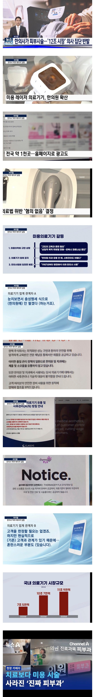

현재 꿀통 박살나기 일보직전인 미용사들
댓글
레이저 제모 제발 좀 싸져라..
탈모약 처방받으러 가기.넘 귀찮아서 동네피부과에서
탈모약처방받아먹는데
약이 뭔지몰라서 검색해서주시더라 나같은사람 없나봄 ㅠ
그러다가 어떤남자 의사선생님한테 처방받는데
미녹시딜은 장기간복용하면 건강에안좋다고
약효과 받고있으니 피나만먹고 미녹시딜은 바르는걸로 바꾸라고 얘기해주시고 빼시더ㄹ라고 감동받음 ㅠㅠ
처방 받으려면 피부과 가야하는거지?
처방은 다른 데서도 해줌. 첨에 진단이나 상담 필요하면 가
일반 의원가서 먹는약 이름 말하면 바로 처방내줌 ㅇㅇ
제네럴 먹는거면 피나스테리드 복제약 처방해달라고하면 해주더라
두타도 마찬가지고
미용시술 한의원에서 받으면 쌈
미용을 한의사한테만푸니까 의료기기업체가 의사들 눈치보잖아 빨리 간호사들한테 풀어서 의료기기수요를 늘려라
이제 의사들 눈치 볼 필요 없는 시장점유율 낮은 외국계 의료기기, 기존 커넥션 없거나 적은 신규업체 중심으로 한의사들에게 공급되겠구만
ㅋㅋㅋ 이미 우리동네도 한의원에서 피부미용 하고있더라. 친절하고 단가도 ㅈㄴ내려서 사람 대기터짐.
난 상관없다고 생각함
솔찍히 저게 무슨 의료야
피부과랑 미용과랑 구분해주라 제발...